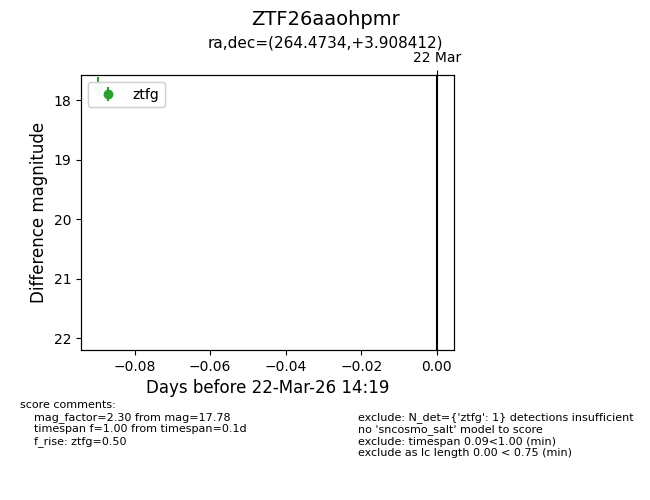
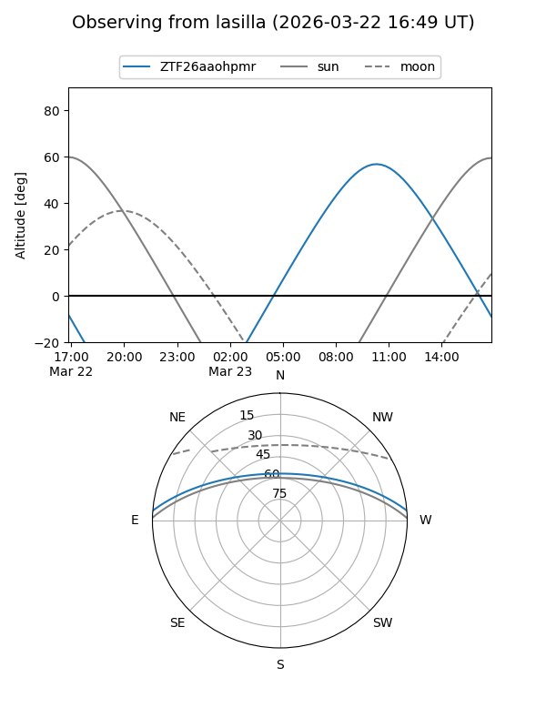
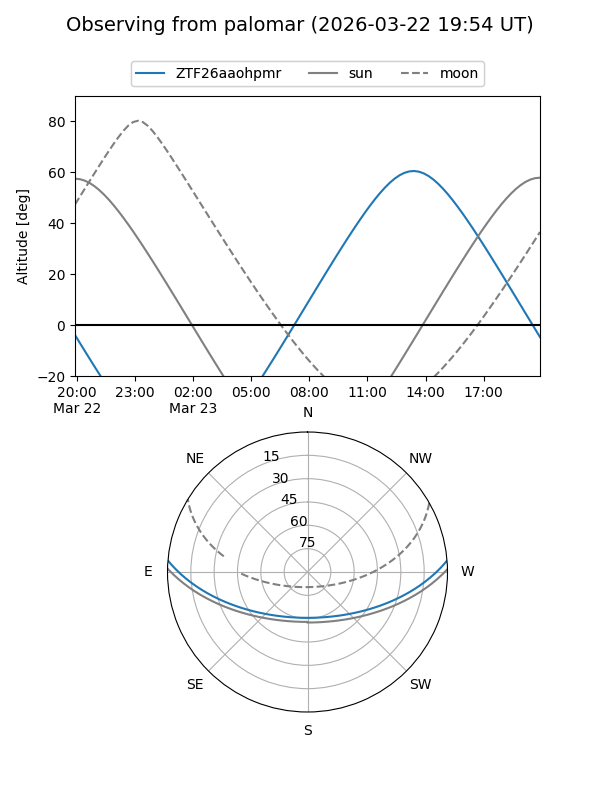

ZTF26aaohpmr
Target ZTF26aaohpmr at 2026-03-22 14:21
Aliases and brokers:
FINK: link
Lasair: link
ALeRCE: link
alt names
ZTF26aaohpmr (ztf,fink_ztf)
Coordinates:
equatorial (ra, dec) = 264.4734,+3.90841
equatorial (HMS+DMS) = 17:37:53.63,+03:54:30.28
galactic (l, b) = (27.9320,+18.12829)
Flags:
Photometry:
last ztfg=17.78
1 ztfg detections
Lightcurve

Visibility


Additional plots